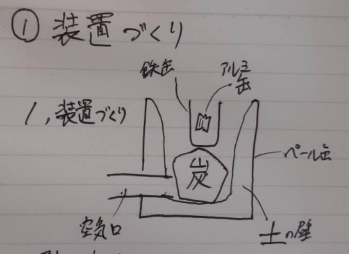
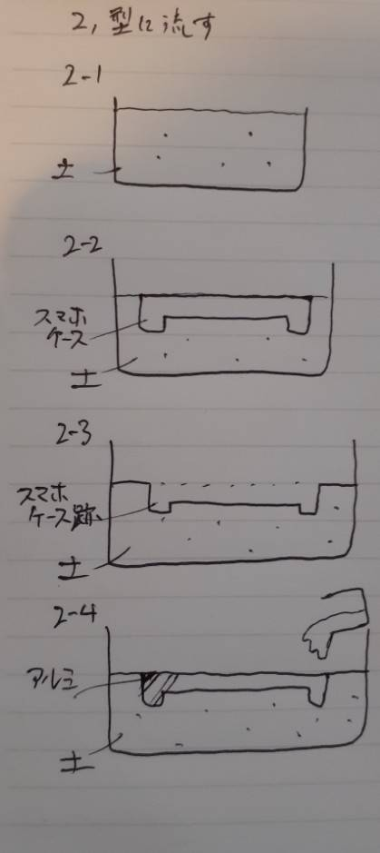
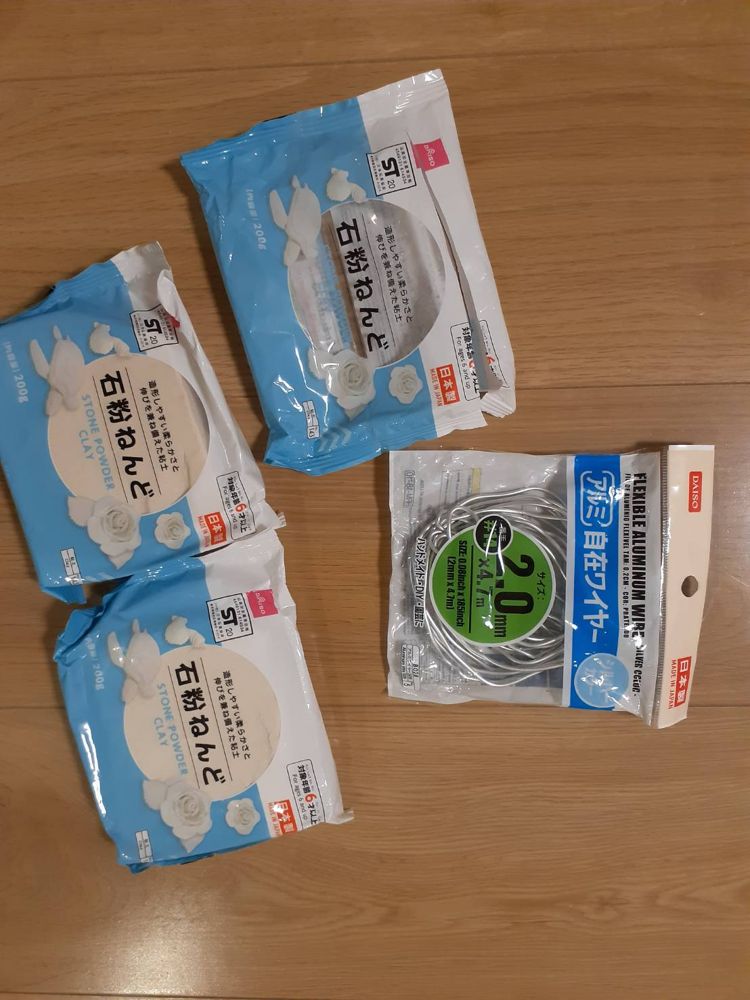
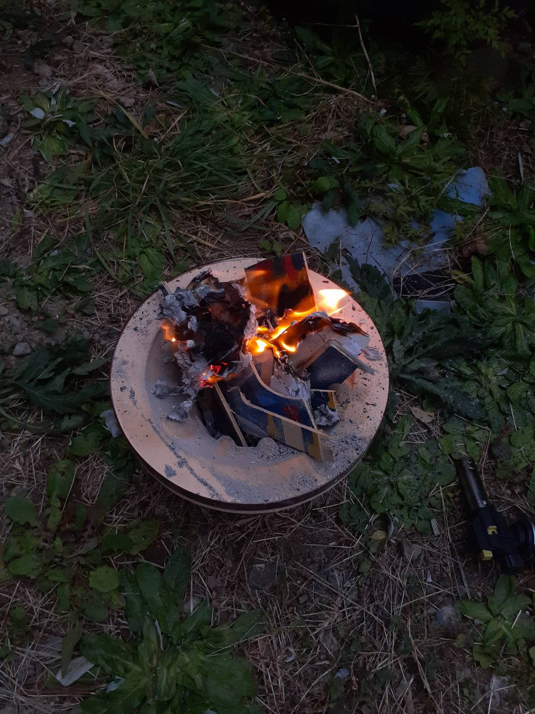
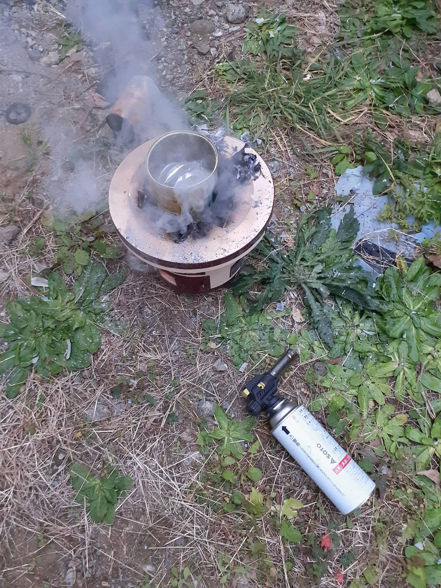
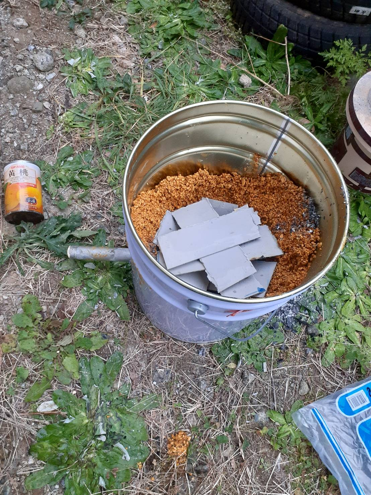
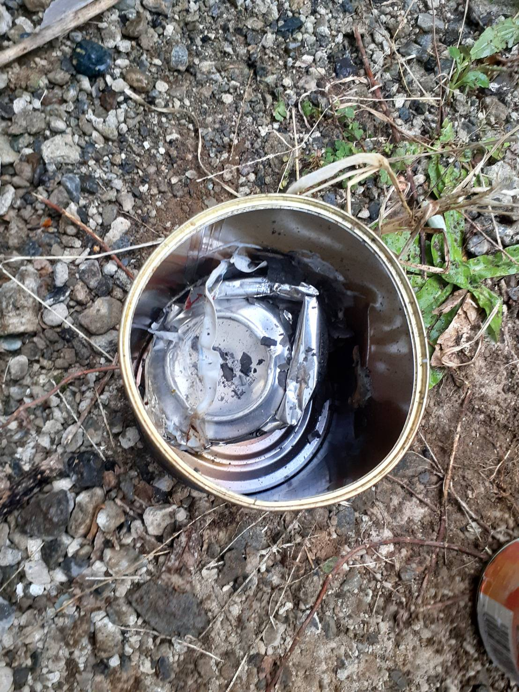

アルミのスマホケース
家に家族が飲み終わったアルミ缶がたくさんあったのでこの際に、
アルミを溶かして排熱効率の良いスマホケースを作ろうと思った。
予想工程


（アルミ缶を鉄の缶で溶かす理由は、
アルミの融点が660.3℃なのに対して鉄は1,538℃だからである。）
- 装置づくり
- 型作り
実際にやってみた
まず素材を集める

この他にも、
- 七輪
- 木炭
- ペール缶ー燃やす装置の枠として
- 鹿沼土ー燃やす装置の土壁として
- 鉄パイプー炎に空気を送り高温にするため
を用意した。
プランBとして石膏粘土で型を作ってみたところ、
思うように固まらなかったので却下することに。


七輪で燃やしてみたが、
プラスチックは溶けてもアルミは溶けなかった。
より大きな容器なら、より高火力が出ると思い
ペール缶に変更。


しかし不運にも雨が降り始めたのと、
土壁が固まってなかった。
そして期限も迫っていたので中断することにした。
結局アルミは溶けず、型の段階には未到達のままとなった。
反省点
- 難易度が高いので、
やるなら時間を取り、得意な人同伴かしっかりと学習しておく方がよかったかも。
- 溶けなかったのは単にアルミの融点に達しなかったことが
原因なので火力を高めたい。